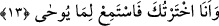
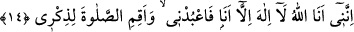

Bazı büyükler de ayakkabılar ile dünya ve âhiretin kastedildiğini söylemiştir. Sanki
Allah ona Allâh’ı ma‘rifet ve müşâhedede istiğrak üzere olmasını emretmiştir.
Mukaddes vâdi ise Allâh’ın celâlinin kudsiyyeti ve izzetinin tahâretidir.
Bir başka zat da şöyle demiştir: Allâh’ın varlığının isbâtı iki mukaddime (önerme) ile
olup bunlar ayakkabılara benzetilmiştir. Çünkü maksûda ve Yaratan’ı ma‘rifete onlarla
ulaşılır. Maksûda ulaştıktan sonra, kalbin kuds nurları içinde müstağrak kalması için
onlara iltifat etmemek gerekir. Sanki âyette şöyle buyrulmuştur: ‘Delil ve burhan fikrini
bırak. Çünkü müşâhede ve ıyândan sonra bunda bir fayda yoktur.
Harem’de oturanlar kıblenümâdan âzâddırlar
Mesnevî’de şöyle der:
Göklerin damlarına çıktıktan sonra
Merdiven aramak mânâsızdır.
Aydın ayna sâf ve cilâlı bir halde iken
Onu cilâlamaya kalkışmak câhilliktir.
Padişah kabul edip huzurunda oturduktan sonra
Mektup ve elçi araştırmak çirkin bir şeydir.
Bu yüzden Şeyh Şiblî hazretleri Allâh’a vuslattan sonra bütün kitaplarını suya
vermiştir. Düşün de ibret al!
“Sen mukaddes” kötülüklerden pâk ve uzak olan “Tuvâ vadisindesin.” Tuvâ vâdinin
ismi olup onu açıklamaktadır. Tuvâ, Şâm’da bir vâdinin ismidir. Rivâyete göre Mûsâ
(a.s.) ayakkabılarını çıkarmış ve vâdinin arkasına atmıştır.
13. Ben seni seçtim. Şimdi vahyedilene kulak ver.
“Ben seni” nübüvvet ve risâlet (peygamberlik) için “seçtim.” Kıraat imamlarından
Hamza âyeti “
(Biz seni seçtik)” diye okumuştur. “Şimdi” emir ve yasaklardan
sana “vahyedilene kulak ver.”
14. Muhakkak ki ben, Allâh’ım. Ben’den başka ilah yoktur. Bana kulluk et; beni
anmak için namaz kıl.